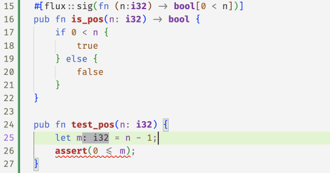

Flux is a refinement type checker for Rust that lets you specify a range of correctness properties and have them be verified at compile time.
See the examples -- listed in the summary on the left -- to learn about Refinement types and Rust.
You can try it online here.
Installing Flux
Requirements
Be sure that the liquid-fixpoint and z3 executables are in your $PATH.
Installing
The only way to use flux is to build it from source.
First you need to clone the repository
git clone https://github.com/flux-rs/flux
cd flux
To build the source you need a nightly version of rustc.
We pin the version using a toolchain file (more info here).
If you are using rustup, no special action is needed as it should install the correct rustc version and components based on the information on that file.
Next, run the following to build and install flux binaries
cargo xtask install
This will install two binaries rustc-flux and cargo-flux in your cargo home. These two binaries should be used
respectively to run flux on either a single file or on a project using cargo. The installation process will
also copy some files to $HOME/.flux.
Running Flux
You can run flux on a single file or entire crate.
Running on a File: rustc-flux
You can use rustc-flux as you would use rustc.
For example, the following command checks the file test.rs.
rustc-flux path/to/test.rs
The flux binary accepts the same flags as rustc.
You could for example check a file as a library instead of a binary like so
rustc-flux --crate-type=lib path/to/test.rs
Running on a package: cargo-flux
Flux is integrated with cargo and can be invoked in a package as follows:
cargo flux
By default, Flux won't verify a package unless it's explicitly enabled in the manifest.
To do so add the following to Cargo.toml:
[package.metadata.flux]
enabled = true
A tiny example
The following example declares a function inc
that returns an integer greater than the input.
We use the nightly feature register_tool
to register the flux tool in order to
add refinement annotations to functions.
#![allow(unused)] fn main() { #[flux::sig(fn(x: i32) -> i32{v: x < v})] pub fn inc(x: i32) -> i32 { x - 1 } }
You can save the above snippet in say test0.rs and then run
rustc-flux --crate-type=lib path/to/test0.rs
you should see in your output
error[FLUX]: postcondition might not hold
--> test0.rs:3:5
|
3 | x - 1
| ^^^^^
as indeed x - 1 is not greater than x as required by the output refinement i32{v: x < v}.
If you fix the error by replacing x - 1 with x + 1, you should get no errors
in the output (the output may be empty, but in this case no output is a good
thing).
Read these chapters to learn more about what you specify and verify with flux.
A note about the flux-driver binary
The flux-driver binary is a rustc
driver
(similar to how clippy works) meaning it uses rustc as a library to "drive"
compilation performing additional analysis along the way. Running the binary
requires dynamically linking a correct version of librustc. Thus, to avoid the
hassle you should never execute it directly. Instead, use rustc-flux or cargo-flux.
Editor Support
This section assumes you have installed flux, cargo-flux, and rustc-flux.
Rust-Analyzer in VSCode
Add this to the workspace settings i.e. .vscode/settings.json
{
"rust-analyzer.check.overrideCommand": [
"cargo",
"flux",
"--workspace",
"--message-format=json-diagnostic-rendered-ansi"
]
}
Note: Make sure to edit the paths in the above snippet to point to the correct locations on your machine.
Configuration
Environment Variables
You can set various env variables to customize the behavior of flux.
FLUX_CONFIGtellsfluxwhere to find a config file for these settings.- By default,
fluxsearches its directory for aflux.tomlor.flux.toml.
- By default,
FLUX_SYSROOTtellscargo-fluxandrustc-fluxwhere to find theflux-driverbinary.- Defaults to the default installation location in
~/.flux.
- Defaults to the default installation location in
FLUX_LOG_DIR=path/to/log/sets the directory where constraints, timing and cache are saved. Defaults to./log/.FLUX_DUMP_CONSTRAINT=1tellfluxto dump constraints generated for each function.FLUX_DUMP_CHECKER_TRACE=1saves the checker's trace (useful for debugging!)FLUX_DUMP_TIMINGS=1saves the profile informationFLUX_DUMP_MIR=1saves the low-level MIR for each analyzed functionFLUX_POINTER_WIDTH=Nthe size of (either32or64), used to determine if an integer cast is lossy (default64).FLUX_CHECK_DEF=nameonly checks definitions containingnameas a substringFLUX_CACHE=1"switches on query caching and saves the cache inFLUX_CACHE_FILEFLUX_CACHE_FILE=file.jsoncustomizes the cache file, defaultFLUX_LOG_DIR/cache.jsonFLUX_CHECK_OVERFLOW=1checks for over and underflow on arithmetic integer operations, default0. When set to0, it still checks for underflow on unsigned integer subtraction.
Config file
The config file is a .toml file that contains on each line the lowercase name
of a flux command line flag without the FLUX_ prefix. Set environment
variables take priority over the config file.
The config file should be in the project root.
For example, suppose your project root contains the following flux.toml.
log_dir = "./test"
dump_timings = true
dump_mir = true
cache = true
and you run in the project root
FLUX_DUMP_MIR=0 cargo-flux check
then flux will create the directory ./test/ and write ./test/timings, a file
containing profiling information. It will not dump the MIR because that setting
was overridden by setting the environment variable FLUX_DUMP_MIR=0.
Crate Config
Some flags can be configured on a per-crate basis using the custom inner attribute #![flux::cfg].
This annotation relies on the unstable custom inner attributes feature. To be able to use with a
non-nightly compiler you have to put it under a cfg_attr.
For example, to enable overflow checking:
#![allow(unused)] #![cfg_attr(flux, flux::cfg(check_overflow = true))] fn main() { }
The only flag supported now is overflow checking.
Query Caching
FLUX_CACHE=1 persistently caches the safe fixpoint queries for each DefId in
FLUX_LOG_DIR/FLUX_CACHE_FILE, and on subsequent runs, skips queries that are
already in the cache, which considerably speeds up cargo-flux check on an
entire crate.
Flux Specification Guide
This is a WIP guide to writing specifications in flux.
Refinement Types
-
Indexed Type: An indexed type
B[r]is composed of a base Rust typeBand a refinement indexr. The meaning of the index depends on the type. Some examples arei32[n]: denotes the (singleton) set ofi32values equal ton.List<T>[n]: values of typeList<T>of lengthn.
-
Refinement parameter: Function signatures can be parametric on refinement variables. Refinement parameters are declared using the
@nsyntax. For example, the following signature:fn(i32[@n]) -> i32[n + 1]binds
nover the entire scope of the function to specify that it takes ani32equal tonand returns ani32equal ton + 1. This is analogous to languages like Haskell where a lower case letter can be used to quantify over a type, e.g., the typea -> ain Haskell is polymorphic on the typeawhich is bound for the scope of the entire function type. -
Existential Type: An existential type
B{v: r(v)}is composed of a base typeB, a refinement variablevand a refinement predicateronv. Intuitively, a Rust valuexhas typeB{v: r(v)}if there exists a refinement valueasuch thatr(a)holds andxhas typeB[x].i32{v: v > 0}: set of positivei32values.List<T>{v: v > 0}: set of non-empty lists.
-
Constraint Type: A constraint type has the form
{T | r}whereTis any type (not just a base type). Intuitively, a value has type{T | r}if it has typeTand alsorholds. They can be used to constraint a refinement parameter. For example, the following signature constraint the refinement parameternto be less thann.fn({i32[@n] | n < 10}) -> i32[n + 1]Constraint types serve a similar role as existentials as they can also be used to constraint some refinement value with a predicate, but an existential type can only be used to constraint refinement variable that it bound locally, in contrast constraint types can be used to constraint a "non-local" parameter. This can be seen in the example above where the parameter
ncannot be bound locally because it has to be used in the return type.
Argument Syntax
The @n syntax used to declare refinements parameters can be hard to read sometimes. Flux also supports a syntax that let you bind refinement parameters using colons similar to the syntax used to declare arguments in a function. We call this argument syntax. This syntax desugars to one of the refinements forms discussed above. For example, the following signature
fn(x: i32, y: i32) -> i32[x + y]
desugars to
fn(i32[@x], i32[@y]) -> i32[x + y]
It is also possible to attach some constraint to the parameters when using argument syntax. For example,
to specify that y must be greater than x using argument syntax we can write:
fn(x: i32, y: i32{x > y}) -> i32[x + y]
This will desugar to:
fn(i32[@x], {i32[@y] | x > y}) -> i32[x + y]
Extern specs
Sometimes you may want to refine a struct or function that outside your code. We refer to such a specification as an "extern spec," which is short for "external specification."
Flux right now has rudimentary support for extern specs: they are supported for
functions, impls, and structs. Impls are only supported for structs and if you
have multiple impls for a struct (such as &[T] and [T]), those may conflict.
Structs only support opaque refinements.
Import the procedural macros
In order to use an extern spec you need to add a dependency on
flux_rs.
Right now this needs to be done as a local dependency since it is not published.
Below is an example of how you can include it, although the version may be
different.
[dependencies]
flux-rs = { path = "path-to-flux/flux/flux-rs", version = "0.1.0" }
Then in your code you will need to include the extern_spec attribute macro.
use flux_rs::extern_spec;
Extern functions
An example of refining an extern function can be found here.
To define an extern spec on a function, you need to do three things, which happen to correspond to each of the below lines.
#[extern_spec(std::mem)]
#[flux::sig(fn(&mut i32[@a], &mut i32{v : a < v }) -> ())]
fn swap(a: &mut i32, b: &mut i32);
- Add the
#[extern_spec]attribute. This attribute optionally takes a path; in the above example, this isstd::mem. You can use this path to qualify the function. So in the above example, the function we are targeting has the full path ofstd::mem::swap. - Add a
#[flux::sig(...)]attribute. This is required for any extern spec on a function. This signature behaves as if the#[flux::trusted]attribute was added, because we can't actually check the implementation. We just verify some simple things, like that the function arguments have compatible types. - Write a function stub that matches the external function.
If you do the above, you can use std::mem::swap as if it were refined by the
above type.
You shouldn't need to know the details, but here's how the macro works. It
parses the std::mem into a module path and then transforms the function into
#[flux::extern_spec]
#[flux::sig(fn(&mut i32[@a], &mut i32{v : a < v }) -> ())]
#[allow(unused, dead_code)]
fn __flux_extern_spec_swap(a: &mut i32, b: &mut i32) {
std::mem::swap(a, b)
}
It does this to get information about the function std::mem::swap and its
arguments (this turns out to be difficult to do without giving the compiler
something to inspect and type check).
Extern structs and impls
An example of refining an extern struct and impl can be found here. A simpler example just involving structs can be found here.
The syntax for an extern spec on a struct is very similar to that for a function. Once again, each line in the example happens to correspond to a step.
#[extern_spec(std::string)]
#[flux::refined_by(len: int)]
struct String;
- Add the
#[extern_spec]attribute. This attribute optionally takes a path; in the above example, this isstd::string. You can use this path to qualify the function. So in the above example, the struct we are targeting has the full path ofstd::string::String. - Add a
#[flux::refined_by(...)]attribute. This is required for any extern spec on a struct. Right now these attributes behave as if they were opaque (#[flux::opaque]), although we may support non-opaque extern structs. - Write a stub for the extern struct.
If you do the above, you can use std::string::String as if it were refined by
an integer index.
The syntax for an extern impl is a little different than that for functions or structs.
#[extern_spec(std::string)]
impl String {
#[flux::sig(fn() -> String[0])]
fn new() -> String;
#[flux::sig(fn(&String[@n]) -> usize[n])]
fn len(s: &String) -> usize;
}
- You still need to add the
#[extern_spec]attribute, with the same optional argument of the path as above. - You need to write out the
implblock for the struct you want to refine. This struct does not need an extern spec, since by refining theimplyou're only refining its methods. - Write an extern spec for each function you wish to refine (this may be a
subset). This is written just like a function extern spec with the caveat
that the
selfparameter is not presently supported. So for example, instead of writingfn len(&self) -> usize;, you need to writefn len(s: &String) -> usize;.
If you do the above, you can use the above methods ofstd::string::String as if
they were refined.
You shouldn't need to know the details, but here's how the above two macros expand.
For structs:
#[flux::extern_spec]
#[allow(unused, dead_code)]
#[flux::refined_by(len: int)]
struct __FluxExternSpecString(std::string::String);
For impls (this was translated manually so there might be some bugs):
#[allow(unused, dead_code)]
struct __FluxExternImplStructString;
#[allow(unused, dead_code)]
impl __FluxExternImplStructString {
#[flux::extern_spec]
#[flux::sig(fn() -> String[0])]
#[allow(unused, dead_code)]
fn __flux_extern_spec_new() -> String {
std::string::String::new::<>()
}
#[flux::extern_spec]
#[flux::sig(fn(&String[@n]) -> usize[n])]
#[allow(unused, dead_code)]
fn __flux_extern_spec_len(s: &String) -> usize {
std::string::String::len::<>(s)
}
}
Grammar of Refinements
r ::= n // numbers 1,2,3...
| x // identifiers x,y,z...
| x.f // index-field access
| r + r // addition
| r - r // subtraction
| n * e // multiplication by constant
| if r { r } else { r } // if-then-else
| f(r...) // function application
| true | false // booleans
| r == r // equality
| r != r // not equal
| r < r // less than
| r <= r // less than or equal
| r > r // greater than
| r >= r // greater than or equal
| r || r // disjunction
| r && r // conjunction
| r => r // implication
| !r // negation
Ignored and trusted code
Flux offers two attributes for controlling which parts of your code it analyzes: #[flux::ignore] and #[flux::trusted].
#[flux::ignore]: This attribute is applicable to any item, and it instructs Flux to completely skip some code. Flux won't even look at it.#[flux::trusted]: This attribute only applies to functions. When a function is marked as trusted, Flux won't verify its body against its signature. However, it will still be able to reason about its signature when used elsewhere.
The above means that an ignored function can only be called from ignored or trusted code, while a trusted function can also be called from analyzed code.
The #[flux::ignore] attribute applies recursively. For instance, if a module is marked as #[flux::ignore], all its nested elements will also be ignored. This transitive behavior can be disabled by marking an item with #[flux::ignore(no)]1, which will include all nested elements for analysis.
Consider the following example:
#![allow(unused)] fn main() { #[flux::ignore] mod A { #[flux::ignore(no)] mod B { mod C { fn f1() {} } } mod D { fn f2() {} } fn f3() {} } }
In this scenario, functions f2 and f3 will be ignored, while f1 will be analyzed.
A typical pattern when retroactively adding Flux annotations to existing code is to ignore an entire crate and then selectively include specific sections for analysis.
#[flux::ignore] is shorthand for #[flux::ignore(yes)].
Developer's Guide
Regression Tests
You can run the various regression tests in the tests/pos and tests/neg directories using
cargo xtask test
This will build the flux binary and then run it against the entire test suite. You can optionally pass a filter to only run tests containing some substring. For example:
$ cargo xtask test impl_trait
Compiling xtask v0.1.0 (/path/to/flux/xtask)
Finished dev [unoptimized + debuginfo] target(s) in 0.29s
Running `target/debug/xtask test impl_trait`
$ cargo build
Finished dev [unoptimized + debuginfo] target(s) in 0.05s
$ cargo test -p tests -- --test-args impl_trait
Compiling fluxtests v0.1.0 (/path/to/flux/tests)
Finished test [unoptimized + debuginfo] target(s) in 0.62s
Running tests/compiletest.rs (target/debug/deps/compiletest-1241128f1f51caa4)
running 5 tests
test [ui] pos/surface/impl_trait04.rs ... ok
test [ui] pos/surface/impl_trait03.rs ... ok
test [ui] pos/surface/impl_trait01.rs ... ok
test [ui] pos/surface/impl_trait00.rs ... ok
test [ui] pos/surface/impl_trait02.rs ... ok
test result: ok. 5 passed; 0 failed; 0 ignored; 0 measured; 191 filtered out; finished in 0.10s
running 2 tests
test [compile-fail] neg/surface/impl_trait00.rs ... ok
test [compile-fail] neg/surface/impl_trait02.rs ... ok
test result: ok. 2 passed; 0 failed; 0 ignored; 0 measured; 207 filtered out; finished in 0.09s
Testing Flux on a File
When working on Flux, you may want to test your changes by running it against a test file.
You can use cargo xtask run <input> to run Flux on a single input file.
The command will set appropriate flags to be able to use custom Flux attributes and macros,
plus some extra flags useful for debugging.
For example:
$ cat test.rs
#[flux::sig(fn(x: i32) -> i32[x + 1])]
fn add1(x: i32) -> i32 {
x + 1
}
$ cargo xtask run test.rs
The command will use a super set of the flags passed when running regression tests.
Thus, a common workflow is to identify a failing test and run it directly with cargo xtask run,
or alternatively copy it to a different file.
You may also find useful to create a directory in the root of the project and add it to
.git/info/exclude.
You can keep files there, outside of version control, and test Flux against them.
I have a directory called attic/ where I keep a file named playground.rs.
To run Flux on it, I do cargo xtask run attic/playground.rs.
Reporting locations where errors are emitted
When you use cargo xtask run you'll see that we report the location an error was emitted, e.g.,
error[FLUX]: refinement type error
--> attic/playground.rs:4:5
|
4 | 0
| ^ a postcondition cannot be proved
-Ztrack-diagnostics: created at crates/flux-refineck/src/lib.rs:114:15 <------- this
You can also pass -Ztrack-diagnostics=y to enable it if you are not using cargo xtask run
Running outside the project
To run Flux in a package outside the flux repo you need to install the binaries globally. You can
do that using cargo xtask install. If you are continuously testing new changes it could be annoying
to do it each time. To deal with this, you can set the FLUX_SYSROOT environment variable to change the
location where cargo-flux and rustc-flux load the flux-driver. You can set it globally to point
to the target/debug directory inside your local copy of the repo. This way you won't have to run
cargo xtask install after every change, and you can be sure you'll be using the latest local debug
build. Just be aware that the rustc-flux and cargo-flux binaries are built for a specific toolchain,
and you will get a dynamic linking error if the flux-driver was compiled with a different one. This
is to say, you should at least run cargo xtask install every time after the toolchain is updated.
Profiling Flux
Set FLUX_DUMP_TIMINGS=true to have flux write timing diagnostics to ./log/timings.
Right now this is extremely simple, it just provides some details for the spans under flux_typeck and flux_driver.
Sample output
Below is a sample output for an invocation of cargo-flux check that took 19 seconds. The missing 2 seconds approximately accounts for the time it takes for cargo check to run.
Note that check_crate contains everything running under check_top, which is why the sum of the spans is greater than 19 seconds.
check_top
Checker::infer
num events: 205
min non-zero: 0.52ms
1st quartile: 0.52ms
2nd quartile: 1.05ms
3rd quartile: 2.62ms
max: 24.12ms
total time: 229.64ms
Checker::check
num events: 205
min non-zero: 0.52ms
1st quartile: 0.52ms
2nd quartile: 1.05ms
3rd quartile: 5.24ms
max: 159.91ms
total time: 2028.47ms
FixpointCtx::check
num events: 205
min non-zero: 22.02ms
1st quartile: 26.21ms
2nd quartile: 28.31ms
3rd quartile: 40.37ms
max: 1867.51ms
total time: 9106.36ms
total time: 11364.47ms
check_crate
Callbacks::check_wf
num events: 1
min non-zero: 18.35ms
1st quartile: 18.87ms
2nd quartile: 18.87ms
3rd quartile: 18.87ms
max: 18.87ms
total time: 18.87ms
Callbacks::check_crate
num events: 1
min non-zero: 16986.93ms
1st quartile: 16995.32ms
2nd quartile: 16995.32ms
3rd quartile: 16995.32ms
max: 16995.32ms
total time: 16995.32ms
total time: 17014.19ms
Macro expansion
For example if you have code like in path/to/file.rs
#![allow(unused)] fn main() { #[extern_spec] #[flux::refined_by(elems: Set<T>)] struct HashSet<T, S = RandomState>; }
and you want to see what the extern_spec macro expands it out to, then run
cargo x run -- -Zunpretty=expanded path/to/file.rs
Or you can run the xtask command directly
cargo x expand path/to/file.rs
High-level Architecture
Flux is implemented as a compiler driver. We hook into the compiler by implementing the Callbacks trait. The implementation is located is in the flux-driver crate, and it is the main entry point to Flux.
Crates
crates/flux-bin: Contains thecargo-fluxandrustc-fluxbinaries used to launch theflux-driver.crates/flux-common: Common utility definitions used across all crates.crates/flux-config: Crate containing logic associated with global configuration flags that change the behavior of Flux, e.g, to enable or disable overflow checking.crates/flux-desugar: Implementation of name resolution and desugaring from Flux surface syntax into Flux high-level intermediate representation (fhir). This includes name resolution.crates/flux-driver: Main entry point to Flux. It contains theflux-driverbinary and the implementation of theCallbackstrait.crates/flux-errors: Utility definitions for user facing error reporting.crates/flux-fhir-analysis: Implements the "analyses" performed in thefhir, most notably well-formedness checking and conversion fromfhirintorty.crates/flux-fixpoint: Code to interact with the Liquid Fixpoint binary.crates/flux-macros: Procedural macros used internally to implement Flux.crates/flux-metadata: Logic for saving Flux crate metadata that can be used to import refined signatures from external crates.crates/flux-middle: This crate contains common type definitions that are used by the rest of Flux like thertyandfhirintermediate representations. Akin torustc_middle.crates/flux-refineck: Implementation of refinement type checking.crates/flux-syntax: Definition of the surface syntax AST and parser.tests: Flux regression tests.lib/flux-attrs: Implementation of user facing procedural macros for annotating programs with Flux specs.lib/flux-rs: This is just a re-export of the macros implemented influx-attrs. The intention is to eventually put Flux "standard library" here, i.e., a set of definitions that are useful when working with Flux.
Intermediate Representations
Flux has several intermediate representations (IR) for types. They represent a refined version of an equivalent type in some rustc IR. We have picked a distinct verb to refer to the process of going between these different representations to make it easier to refer to them. The following image summarizes all the IRs and the process for going between them.

Surface
The surface IR represents source level Flux annotations. It corresponds to the rustc_ast data structures in rustc. The definition as well as the parser is located in the flux-syntax crate.
Fhir
The Flux High-Level Intermediate Representation (fhir) is a refined version of rustc's hir. The definition is located in the flux_middle crate inside the fhir module. The process of going from surface to fhir is called desugaring, and it is implemented in the flux-desugar crate.
Rty
The definition in the flux_middle::rty module correspond to a refined version of the main rustc representation for types defined in rustc_middle::ty. The process of going from fhir to rty is called conversion, and it is implemented in the flux_fhir_analysis::conv module.
Simplified Rustc
The definition in the flux_middle::rustc module correspond to simplified version of data structures in rustc. They can be understood as the currently supported subset of Rust. The process of going from a definition in rustc_middle into flux_middle::rustc is called lowering and it is implemented in flux_middle::rustc::lowering.
Lifting and Refining
Besides the different translation between Flux intermediate representations, there are two ways to get a refined version from a rust type. The process of going from a type in hir into a type in fhir is called lifting, and it is implemented in flux_middle::fhir::lift. The process for going from a type in flux_middle::rustc::ty into a flux_middle::rty is called refining, and it is implemented flux_middle::rty::refining.
Introducing Flux
Types bring order to code. For example, if a variable i:usize
then we know i is a number that can be used to index a vector.
Similarly, if v:vec<&str> then we can be sure that v is a
collection of strings which may be indexed but of course,
not used as an index. However, by itself usize doesn't
tell us how big or small the number and hence the programmer
must still rely on their own wits, a lot of tests, and a dash
of optimism, to ensure that all the different bits fit properly
at run-time.
Refinements are a promising new way to extend type checkers with logical constraints that specify additional correctness requirements that can be verified by the compiler, thereby entirely eliminating various classes of run-time problems.
We're excited to introduce Flux, a refinement type
checker plugin that brings this technology to Rust.
Indexed Types
The most basic form of refinement type in flux is a type that is
indexed by a logical value. For example
| Type | Meaning |
|---|---|
i32[10] | The (singleton) set of i32 values equal to 10 |
bool[true] | The (singleton) set of bool values equal to true |
Post-Conditions
We can already start using these indexed types to start writing (and checking)
code. For example we can write the following specification which says that
the value returned by mk_ten must in fact be 10
#![allow(unused)] fn main() { #[flux::sig(fn() -> i32[10])] pub fn mk_ten() -> i32 { 5 + 4 } }
but when you compile it, flux will say
error[FLUX]: postcondition might not hold
--> src/basics.rs:7:5
|
7 | 5 + 4
| ^^^^^
The error says that that the postcondition might not hold which means
that the output produced by mk_ten may not in fact be an i32[10]
as indeed, in this case, the result is 9! You can eliminate the error
by replacing the body with 5 + 5 or just 10.

Pre-Conditions
Here's a second example that shows how you can use an index to restrict the space of inputs that a function expects.
#![allow(unused)] fn main() { #[flux::sig(fn (b:bool[true]))] pub fn assert(b:bool) { if !b { panic!("assertion failed") } } }
Here, the refined specification for assert says that you can only call
it with true as the input. So if you write
#![allow(unused)] fn main() { fn test(){ assert(2 + 2 == 4); assert(2 + 2 == 5); // fails to type check } }
then flux will complain that
#![allow(unused)] fn main() { error[FLUX]: precondition might not hold --> src/basics.rs:12:5 | 12 | assert(2 + 2 == 5); // fails to type check | ^^^^^^^^^^^^^^^^^^ }
meaning that the call to assert fails to establish that
the input is indeed true (as of course, in this case, it is not!)

Index Parameters and Expressions
It's not terribly exciting to only talk about fixed values
like 10 or true. To be more useful, flux lets you index
types by refinement parameters. For example, you can write
#![allow(unused)] fn main() { #[flux::sig(fn(n:i32) -> bool[0 < n])] pub fn is_pos(n: i32) -> bool { if 0 < n { true } else { false } } }
Here, the type says that is_pos
- takes as input some
i32indexed byn - returns as output the
boolindexed by0 < n
in other words, the output is true exactly when 0 < n.
We might use this function to check that:
#![allow(unused)] fn main() { pub fn test_pos(n: i32) { let m = if is_pos(n) { n - 1 } else { 0 }; assert(0 <= m); } }
Existential Types
Often we don't care about the exact value of a thing -- but just
care about some properties that it may have. For example, we don't
care that an i32 is equal to 5 or 10 or n but that it is
non-negative.
| Type | Meaning |
|---|---|
i32{v: 0 < v} | The set of i32 values that positive |
i32{v: n <= v} | The set of i32 values greater than or equal to n |
Flux allows such specifications by pairing plain Rust types
with assertions 1 that constrain the value. For example, we can rewrite
mk_10 with the output type i32{v:0<v} that specifies a weaker property:
the value returned by mk_ten is positive.
#![allow(unused)] fn main() { #[flux::sig(fn() -> i32{v: 0 < v})] pub fn mk_ten() -> i32 { 5 + 5 } }
Similarly, you might specify that a function that computes the absolute
value of an i32 with a type which says the result is non-negative and
exceeds the input n.
#![allow(unused)] fn main() { #[flux::sig(fn (n:i32) -> i32{v:0<=v && n<=v})] pub fn abs(n: i32) -> i32 { if 0 <= n { n } else { 0 - n } } }
As a last example, you might write a function to compute the factorial of n
#![allow(unused)] fn main() { #[flux::sig(fn (n:i32) -> i32{v:1<=v && n<=v})] pub fn factorial(n: i32) -> i32 { let mut i = 0; let mut res = 1; while i < n { i += 1; res = res * i; } res } }
Here the specification says the input must be non-negative, and the
output is at least as large as the input. Note, that unlike the previous
examples, here we're actually changing the values of i and res.
Can you guess why the copilot suggestions failed to pass flux, and
what refinements were inferred for i and res in the fixed code
at the end?
Summary
In this post, we saw how Flux lets you
-
decorate basic Rust types like
i32andboolwith indices and constraints that let you respectively refine the sets of values that inhabit that type, and -
specify contracts on functions that state pre-conditions on the sets of legal inputs that they accept, and post-conditions that describe the outputs that they produce.
The whole point of Rust, of course, is to allow for efficient imperative sharing and updates, without sacrificing thread- or memory-safety. Next time, we'll see how Flux melds refinements and Rust's ownership to make refinements happily coexist with imperative code.
These are not arbitrary Rust expressions but a subset of expressions from logics that can be efficiently decided by SMT Solvers
Ownership in Flux
Previously we saw how to refine basic Rust
types like i32 and bool with indices and constraints to
constrain the set of values described by those types.
The whole point of Rust, of course, is to allow for efficient imperative sharing and updates, via the clever type system that keeps an eye on the ownership of resources to make sure that aliasing and mutation cannot happen at the same time.
Next, lets see how Flux melds refinements and Rust's ownership mechanisms to make refinements work in the imperative setting.
Exclusive Ownership
Rust's most basic form of ownership is exclusive ownership, in which exactly one variable in a function has the right to mutate a memory location. When a location is exclusively owned, we can be sure that there are no other references to it, which lets flux update the type whenever the location is changed. For example, consider the program
#![allow(unused)] fn main() { #[flux::sig(fn () -> i32[3])] pub fn mk_three() -> i32 { let mut r = 0; // r: i32[0] r += 1; assert(r == 1); // r: i32[1] r += 1; assert(r == 2); // r: i32[2] r += 1; assert(r == 3); // r: i32[3] r } }
The variable r has different types at each point inside mk_three.
It starts off as i32[0]. The first increment changes it to i32[1],
then i32[2] and finally, the returned type i32[3].
This exclusive ownership mechanism is at work in the factorial example
we signed off with previously
#![allow(unused)] fn main() { #[flux::sig(fn (n:i32{0 <= n}) -> i32{v:n <= v})] pub fn factorial(n: i32) -> i32 { let mut i = 0; // i: i32[0] let mut r = 1; // r: i32[1] while i < n { // i: i32{v:0<=v<=n} // r: i32{v:1<=v && i<=v} i += 1; r = r * i; } r } }
In the above code, i and r start off at 0 and 1 but then
Rust infers (a story for another day) that inside the while-loop1
ihas typei32{v:0<=v && v < n}rhas typei32{v:1<=v && i <= v}
and hence, upon exit since i == n we get that the result is at least n.
Borrowing: Shared References
Exclusive ownership suffices for simple local updates like in factorial.
However, for more complex data, functions must temporarily relinquish
ownership to allow other functions to mutate the data. Rust cleverly
allows this via the notion of borrowing using two kinds of references
that give callees temporary access to a memory location.
The simplest kind of references are of the form &T which denote read-only
access to a value of type T. For example, we might write abs to take
a shared reference to an i32
#![allow(unused)] fn main() { #[flux::sig(fn (p: &i32[@n]) -> i32{v:0<=v && n<=v})] pub fn abs(p: &i32) -> i32 { let n = *p; if 0 <= n { n } else { 0 - n } } }
Notice that the input type has changed: the function now
- Accepts
pa reference to ani32whose value isnas denoted by@n - Returns an
i32that is non-negative and larger thann
The @ marks the n as a refinement parameter whose value
is automatically computed by flux during type checking.
So, for example, Flux can check the below code by automatically
determining that the refinement parameter at the call-site is 10.
#![allow(unused)] fn main() { pub fn test_abs() { let z = 10; assert(0 <= abs(&z)) assert(10 <= abs(&z)) } }
Refinement Parameters
As an aside, we have secretly been using refinement parameters
like @n all along. For example, Flux automatically desugars the signature fn(n:i32{0 <= n} -> ... that we wrote for factorial into
#![allow(unused)] fn main() { fn ({i32[@n] : 0 <= n}) -> i32{v:n <= v} }
where @n is a refinement parameter that is implicitly determined
from the rust parameter n:i32. However, explicit parameters are
essential to name the value of what a reference points to.
In abs the rust parameter p names the reference but the
@n names the (input) value and lets us use it to provide
more information about the output of abs.
Flux is modular in that the only information it
knows about the implementation of abs is the signature: for example
if we remove the fact that the output exceeds n then Flux will
reject the assertion 10 <= abs(&z).

Borrowing: Mutable References
References of type &mut T denote mutable references that can be
used to (read and) write or update the contents of a T value.
Crucially, Rust ensures that while there may be multiple read-only (shared)
references to a location, there is at most one active writeable (mutable)
reference at any point in time.
Flux exploits the semantics of &mut T to treat T as an invariant
of the underlying data. As an example, consider the following function
that decrements the value of a mutable reference while ensuring the
data is non-negative:
#![allow(unused)] fn main() { #[flux::sig(fn(p: &mut i32{v:0 <= v}))] pub fn decr(p: &mut i32) { *p = *p - 1; } }
Flux will complain with the following message
#![allow(unused)] fn main() { error[FLUX]: assignment might be unsafe --> src/basics.rs:13:9 | 13 | *p = *p - 1; | ^^^^^^^^^^^ }
as in fact, we may be writing a negative value into *p
if, for example, the old value was zero. We can fix this
code by guarding the update with a test that ensures the
original contents are in fact non-zero
#![allow(unused)] fn main() { #[flux::sig(fn(p: &mut i32{v:0 <= v}))] pub fn decr(p: &mut i32) { let n = *p; if n != 0 { *p = n - 1; } } }
at which point Flux is happy to sign off on the code.

Aliased References
Flux uses Rust's borrowing rules to track invariants even when there may be aliasing. As an example, consider the function
#![allow(unused)] fn main() { #[flux::sig(fn (bool) -> i32{v:0 <= v})] fn test_alias(z: bool) -> i32 { let mut x = 1; // x: i32[1] let mut y = 2; // y: i32[2] let r = if z { &mut x } else { &mut y }; // r: &mut i32{v:0 <= v} decr(r); *r } }
The reference r could point to either x or y depending
on the (unknown) value of the boolean z. Nevertheless, Flux
determines that both references &mut x and &mut y point
to values of the more general type i32{v:0<=v} and hence,
infers r : &mut i32{v:0<=v} which allows us it to then call
decr with the reference and guarantee the result (after decr)
is still non-negative.
Borrowing: Strong References
In many situations, we want to lend a value to another function
that actually changes the value's (refinement) type upon exit.
For example, consider the following function to increment a reference
to a non-negative i32
#![allow(unused)] fn main() { #[flux::sig(fn (p: &mut i32{v:0 <= v}))] fn incr(p: &mut i32) { *p += 1 } }
Recall that Flux is modular in that the only information it
has about incr is what is said in the signature. The signature
for incr only says p remains non-negative: Flux does not
know that incr actually increments the value of p.
Hence, Flux fusses that the following assert may fail even though
its patently obvious that it will succeed!

To verify test_incr we need a signature for incr that says
that its output is indeed one greater2 than its input.
Flux extends Rust with the notion of strong references
of the form &strg T which refine Rust's &mut T to grant
exclusive access to the underlying T. Crucially, strong
references also let us specify how the type is updated when
the function exits3. Thus, we can use strong references to
type incr as
#![allow(unused)] fn main() { #[flux::sig(fn(p: &strg i32[@n]) ensures p:i32[n+1])] fn incr(p: &mut i32) { *p += 1 } }
The Flux signature refines the plain Rust one to specify that
pis a strong reference to ani32,- the input type of
*pisi32[n], and - the output type of
*pisi32[n+1].
With this specification, Flux merrily checks test_incr, by
determining that the refinement parameter @n is 10 and
hence, that upon return x: i32[11].
Summary
To sum up, Flux exploits Rust's ownership mechanisms to track properties
of shared (&T) and mutable (&mut T) references, and additionally
adds a strong (&strg T) reference -- a special case of &mut -- to
support the cases where the type itself is changed by a call.
Next, we'll see how refinements and ownership yield a simple refined API for vectors that lets Flux check bounds safety at compile time...
For those familiar with the term, these types are loop invariants
Setting aside the issue of overflows for now
Thereby allowing so-called strong updates in the type specifications
Refined Vectors
While rustc has a keen eye for spotting nasty bugs at
compile time, it is not omniscient. We've all groaned in
dismay at seeing deployed code crash with messages like
panicked at 'index out of bounds: the len is ... but the index is ...'
Next, lets see how flux's refinement and ownership mechanisms let us write a refined vector API whose types track vector sizes and ensure --- at compile time --- that vector accesses cannot fail at runtime.
Refining Vectors to Track their Size
To begin with, we will defined a refined vector type which is simply a wrapper
around the standard Vec type
#![allow(unused)] fn main() { #[flux::refined_by(len: int)] pub struct RVec<T> { inner: Vec<T>, } }
The #[flux::refined_by(len: int)] attribute tells flux that the type RVec<T> struct
is indexed by a len refinement which tracks the size of the underlying vector, just
like the indices for i32 and bool tracked the actual value of the underlying
integer or boolean). The idea is that the type
RVec<i32>[10]represents a vector ofi32size 10, andRVec<bool>{v:0 < v}represents a non-empty vector ofbool, andRVec<RVec<f32>[n]>[m]represents a vector of vectors off32of sizemand each of whose elements is a vector of sizen.
Creating Vectors
Now that we can talk about the size of a vector, lets build up an API for creating and manipulating vectors. I suppose one must start with nothing: an empty vector.
#![allow(unused)] fn main() { impl<T> RVec<T> { #[flux::trusted] #[flux::sig(fn() -> RVec<T>[0])] pub fn new() -> Self { Self { inner: Vec::new() } } } }
The above implements RVec::new as a wrapper around Vec::new.
The #[flux::trusted] attribute tells Flux there is nothing to
"check" here, as we are defining the API itself and trusting
that the implementation (using vec is correct).
However, the signature says that callers of the RVec::new get
back a vector indexed with 0 i.e. an empty vector.
Pushing Values
An empty vector is a rather desolate thing.
To be of any use, we need to be able to push values into the container, like so
#![allow(unused)] fn main() { #[flux::trusted] #[flux::sig(fn(self: &strg RVec<T>[@n], T) ensures self: RVec<T>[n+1])] pub fn push(&mut self, item: T) { self.inner.push(item); } }
The refined type for push says that it takes a strong reference (self)
--- where strg means the refined type may be changed by the function ---
to an RVec<T> of size n and a value T and upon exit, the size of self
is increased by 1.
Popping Values
Not much point stuffing things into a vector if we can't get them out again.
For that, we might implement a pop method that returns the last element
of the vector. Aha, but what if the vector is empty? You could return an
Option<T> or since we're tracking sizes, we could require that pop
only be called with non-empty vectors.
#![allow(unused)] fn main() { #[flux::trusted] #[flux::sig(fn(self: &strg {RVec<T>[@n] | 0 < n}) -> T ensures self: RVec<T>[n-1])] pub fn pop(&mut self) -> T { self.inner.pop().unwrap() } }
Using the API
Now already flux can start checking some code, for example if you push two
elements, then you can pop twice, but flux will reject the third pop at
compile-time

In fact, the error message from flux will point to exact condition that
does not hold
#![allow(unused)] fn main() { error[FLUX]: precondition might not hold --> src/vectors.rs:24:5 | 24 | v.pop(); | ^^^^^^^ call site | = note: a precondition cannot be proved at this call site note: this is the condition that cannot be proved --> src/rvec.rs:78:47 | 78 | #[flux::sig(fn(self: &strg {RVec<T>[@n] | 0 < n}) -> T | ^^^^^ }
Querying the Size
Perhaps we should peek at the size of the vector to make sure its not empty before
we pop it. We can do that with a len method whose type says that the returned usize
is, in fact, the size of the input vector
#![allow(unused)] fn main() { #[flux::trusted] #[flux::sig(fn(&RVec<T>[@n]) -> usize[n])] pub fn len(&self) -> usize { self.inner.len() } }
Now, flux "knows" that after two pushes, the size of the vector is 2 and after
the two pops, the size is 0 again

Random Access
Of course, vectors are not just stacks, they also allow
random access to their elements which is where those
pesky panics occur, and where the refined vector API
gets rather useful. Since we're tracking sizes, we can
require that the method to get an element only be
called with a valid index that is between 0 and the
vector's size
#![allow(unused)] fn main() { #[flux::sig(fn(&RVec<T>[@n], i: usize{i < n}) -> &T)] pub fn get(&self, i: usize) -> &T { &self.inner[i] } #[flux::sig(fn(&mut RVec<T>[@n], i: usize{i < n}) -> &mut T)] pub fn get_mut(&mut self, i: usize) -> &mut T { &mut self.inner[i] } }
With these refined get methods, flux can now spot the
``off-by-one'' error in the following code and accepts
the fix 1

Its a bit gross to use get and get_mut directly, so instead we implement
the Index and IndexMut traits for RVec which allows us to use the
[] operator to access elements
#![allow(unused)] fn main() { impl<T> std::ops::Index<usize> for RVec<T> { type Output = T; #[flux::sig(fn(&RVec<T>[@n], i:usize{i < n}) -> &T)] fn index(&self, index: usize) -> &T { self.get(index) } } impl<T> std::ops::IndexMut<usize> for RVec<T> { #[flux::sig(fn(&mut RVec<T>[@n], i:usize{i < n}) -> &mut T)] fn index_mut(&mut self, index: usize) -> &mut T { self.get_mut(index) } } }
And now the above vec_sum example looks a little nicer

Memoization
Lets put the whole API to work in this "memoized" version of the fibonacci function which uses a vector to store the results of previous calls
#![allow(unused)] fn main() { pub fn fib(n: usize) -> i32 { let mut r = RVec::new(); let mut i = 0; while i < n { if i == 0 { r.push(0); } else if i == 1 { r.push(1); } else { let a = r[i - 1]; let b = r[i - 2]; r.push(a + b); } i += 1; } r.pop() } }
Oops, flux is not happy with the call to pop at the end of the function
which returns the last value as the result.
#![allow(unused)] fn main() { error[FLUX]: precondition might not hold --> src/vectors.rs:40:5 | 40 | r.pop() | ^^^^^^^ }
Flux complains that the vector may be empty and so the pop call may
fail ... but why? Can you spot the problem?
Indeed, we missed a "corner" case -- when n is 0 we skip the loop and
so the vector is empty! Once we add a test for that, flux is happy.

Binary Search
As a last example, lets look at a simplified version of the
binary_search method from std::vec, into which I've snuck a tiny little bug
#![allow(unused)] fn main() { pub fn binary_search(vec: &RVec<i32>, x: i32) -> Result<usize, usize> { let mut size = vec.len(); let mut left = 0; let mut right = size; while left <= right { let mid = left + size / 2; let val = vec[mid]; if val < x { left = mid + 1; } else if x < val { right = mid; } else { return Ok(mid); } size = right - left; } Err(left) } }
Flux complains in two places
#![allow(unused)] fn main() { error[FLUX]: precondition might not hold --> src/vectors.rs:152:19 | 152 | let val = vec[mid]; | ^^^^^^^^ call site | = note: a precondition cannot be proved at this call site note: this is the condition that cannot be proved --> src/rvec.rs:189:44 | 189 | #[flux::sig(fn(&RVec<T>[@n], usize{v : v < n}) -> &T)] | ^^^^^ error[FLUX]: arithmetic operation may overflow --> src/vectors.rs:160:9 | 160 | size = right - left; | ^^^^^^^^^^^^^^^^^^^ }
-
The vector access may be unsafe as
midcould be out of bounds! -
The
sizevariable may underflow asleftmay exceedright!
Can you the spot off-by-one and figure out a fix?
Summary
So, we saw how Flux's index and constraint mechanisms combine with Rust's ownership to let us write a refined vector API that ensures the safety of all accesses at compile time.
Next time, we'll see how these mechanisms are compositional in that we can use standard type machinery to build up compound structures and APIs from simple ones.
Why not use an iterator? We'll get there in due course!
About Flux
Flux is a research project described in the paper
Team
Flux is being developed by
Code
Flux is open-source and available here
Thanks
This work was supported by the National Science Foundation, European Research Council, and by generous gifts from Microsoft Research.
Limitations
This is a prototype! Use at your own risk. Everything could break and it will break.